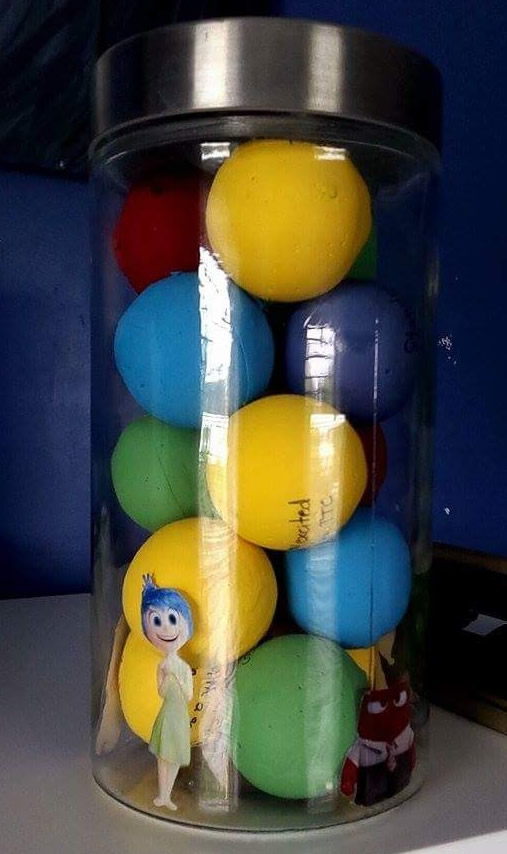

Cinderella Painting
This is an acrylic painting of the dress from Cinderella on a dress form. I am in the proccess of painting it for my mom's birthday, as she adores the princess and the dress. I intend to paint Jaq and Gus (Cinderella's mice friends) in the scene. As well, I want to glue small studs around the sparkles for sone extra shine because my mom also loves shiny objects. |
|
Inside Out Memory Jar
This is a present for my best friend for Christmas. Her favourite movie is Inside Out, and because we have been friends for a long time, I think this is a perfect gift. Each ball has a memory written on it of a memorable time something her and I shared, painted according to the colour of the memory's mood. For example, yellow balls represent happy memories, blue balls represent sad memories, purple balls represent memories with fear, green balls represent memories with disgust, and red balls represent angry memories. Of course, the angry, disgust and fearful memories are not truly reflections of negative memories but are light hearted jokes. I am in the process of writing all the memories on the balls. |

|